Symbol
Standalone mark; sanctuary wall, pulpit face and merchandise.
Grafton Baptist Church / Gable refinement / October 2026
The offset street junction becomes a cross. The church's broad gable and single round window identify its place in the north-west quadrant. The detail comes from the actual building, simplified for a logo.
Download the complete public artwork suite (ZIP) · Back to the church website preview
Download the 11-page concept and application guide (PDF)
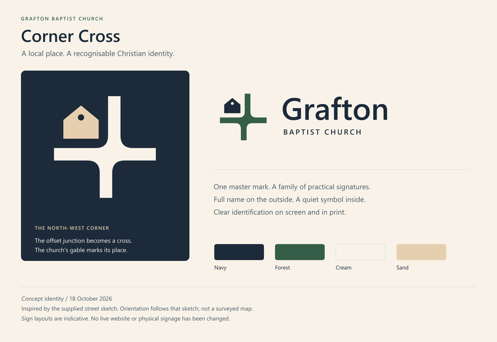
The junction follows the supplied street sketch, with the upper arm slightly east of the lower arm. The church stays in the north-west quadrant. Its symbol now uses the two strongest features in the supplied building photograph: the broad triangular gable and the round window beneath the ridge. The earlier doorway, side windows and projecting roof edges have been removed.
The porch, trim, signage, date plaque, poles and map pin are deliberately omitted. This is a simplified front-elevation symbol placed on the junction, not a perspective map or exact architectural drawing. The photograph's viewpoint does not change the north-west site position.
The navy, forest, cream and sand palette continues the refreshed Riverlands website. Sage and river blue remain supporting environmental colours, not additional colours inside the core logo.
Seven signatures, each in six colourways. The same gable and round window appear throughout. The micro version removes only the round window for small reproduction.
Standalone mark; sanctuary wall, pulpit face and merchandise.
Simplified mark; favicon and very small digital use.
Primary signature; website, letterhead and general signage.
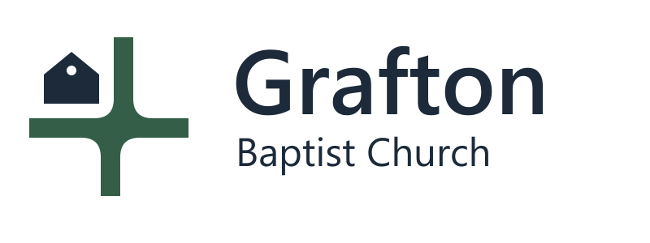
Compact two-line name; doorway and narrow signboards.
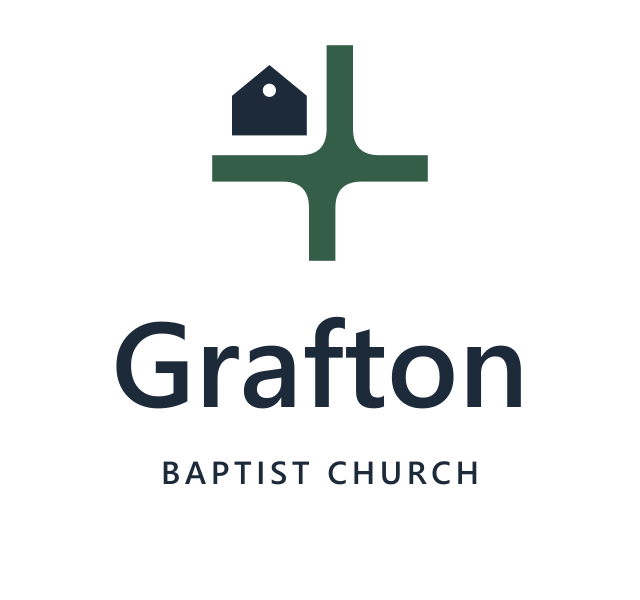
Centred signature; entrance panels and portrait formats.
Single-line full name; long external building fascia.
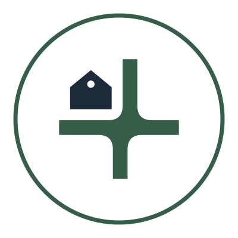
Contained symbol; avatar, sticker and circular signage.
| Version | Cross / church / lettering | SVG links |
|---|---|---|
| Primary | #355e48 / #1c2a3a / #1c2a3a | Signature · Mark |
| Forest | #355e48 / #355e48 / #355e48 | Signature · Mark |
| Navy | #1c2a3a / #1c2a3a / #1c2a3a | Signature · Mark |
| Black | #000000 / #000000 / #000000 | Signature · Mark |
| White | #ffffff / #ffffff / #ffffff | Signature · Mark |
| Reversed | #f8f2e8 / #e6cfae / #f8f2e8 | Signature · Mark |
Use the full name at public entry points. Use the symbol alone where the church is already understood. Keep changing information separate from permanent architectural identification.
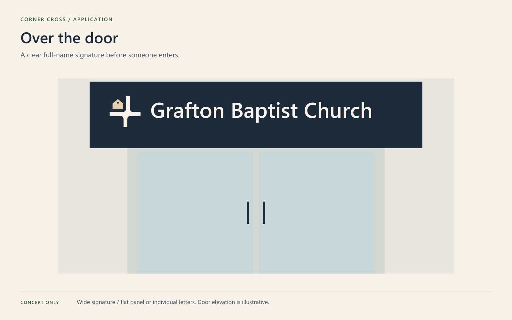
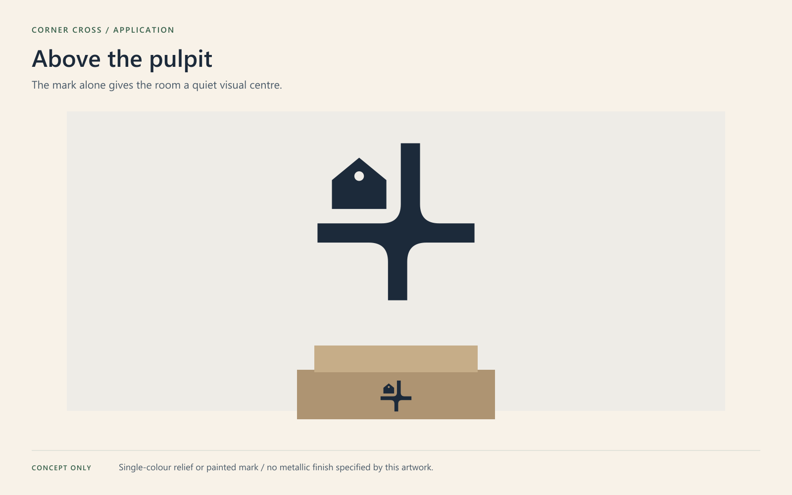
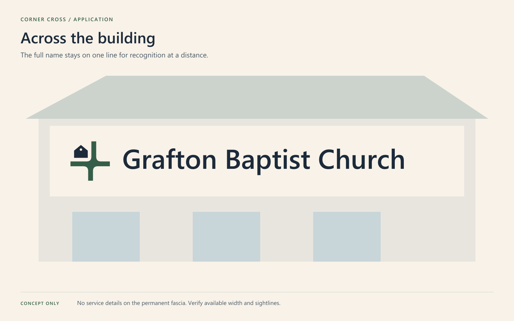
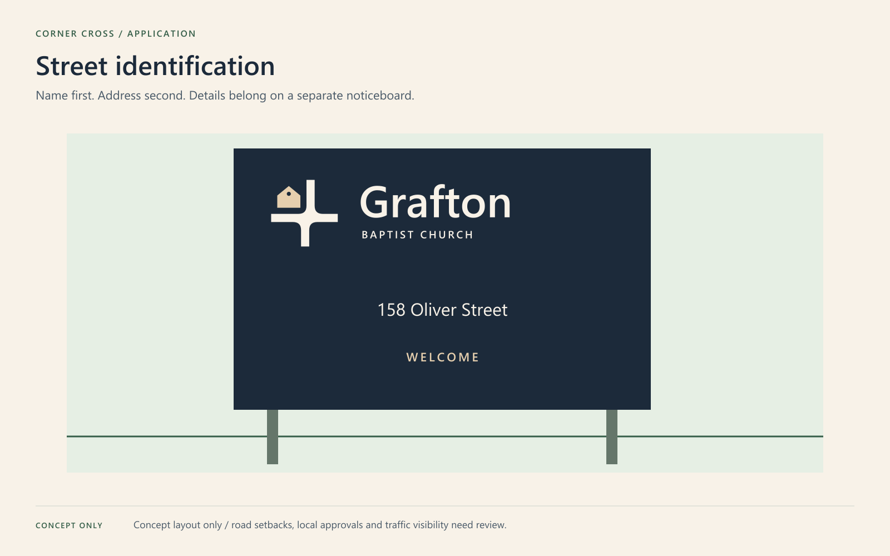
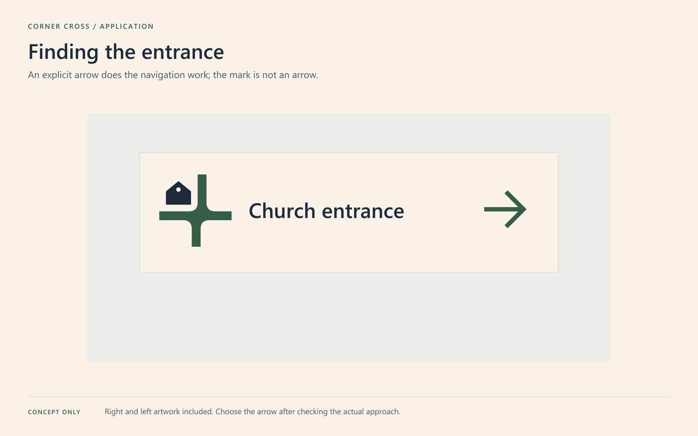
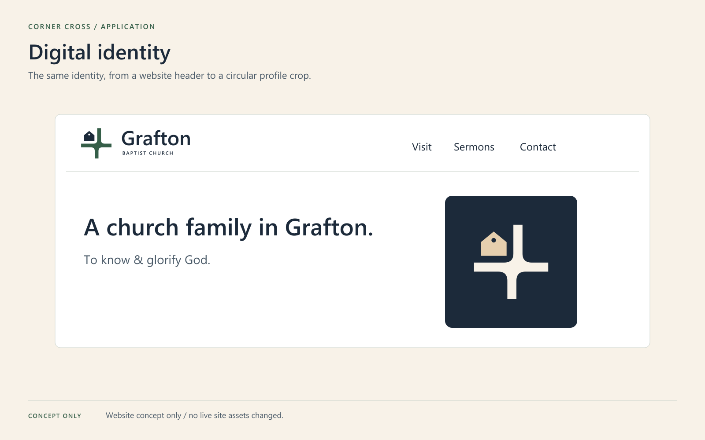
Every entry below includes outlined SVG, vector PDF and PNG. The PNGs preserve transparency where the design has no background. White/reversed PDFs may look blank on white paper: they are intended for a dark substrate.
| Artwork | Use | Download |
|---|---|---|
| Entrance / over-door panel | Proportion 32:13. Name and welcome only; no changing service times. | SVG PDF PNG |
| Long exterior fascia | Proportion 60:11. Full name on one line for a long wall or fascia. | SVG PDF PNG |
| Sanctuary / above-pulpit signature | Centred mark with optional small identifier. Transparent background. | SVG PDF PNG |
| Pulpit face / symbol only | Quiet, simplified application with no small lettering. Transparent background. | SVG PDF PNG |
| Roadside / portrait panel | Proportion 3:5. Address from supplied church material. Installation position needs approval. | SVG PDF PNG |
| Wayfinding / entrance left | Select direction only after a site walk. Never mirror the logo itself. | SVG PDF PNG |
| Wayfinding / entrance right | Select direction only after a site walk. Never mirror the logo itself. | SVG PDF PNG |
| Community Space / endorsed ministry | Church identity retained without creating an unrelated sub-brand. | SVG PDF PNG |
| Social avatar / navy | Square with circular crop safety. Use symbol, never tiny full church name. | SVG PDF PNG |
| Social avatar / cream | Square with circular crop safety. Use symbol, never tiny full church name. | SVG PDF PNG |
| Sermon podcast cover | 3000 x 3000 RGB cover, no platform logos or fabricated episode details. | SVG PDF PNG |
| Projection / holding slide | 16:9 welcome slide; restrained lighting and no moving elements. | SVG PDF PNG |
| Video / transparent lower third | 1920px transparent PNG and vector source. Church identification only. | SVG PDF PNG |
| Email signature / logo only | Use displayed width 260-360px. Add live contact text separately for accessibility. | SVG PDF PNG |
| Letterhead / A4 proportion | Scale PDF to A4 at print. Blank correspondence area; no invented email or phone. | SVG PDF PNG |
| Welcome or business card / front | Proportion 7:4. RGB concept; printer supplies final trim, bleed and colour profile. | SVG PDF PNG |
| Welcome or business card / back | No time, website, QR code or email until operational details are confirmed. | SVG PDF PNG |
| Corner Cross / identity concept | SVG PDF PNG | |
| Corner Cross / complete logo family | SVG PDF PNG | |
| Corner Cross / geometry and usage | SVG PDF PNG | |
| Colour and minimum-size references | SVG PDF PNG | |
| Production handoff and use-case selector | SVG PDF PNG |
Asset register (CSV) · Favicon ICO · Apple touch icon · Podcast cover JPEG
The editable folder contains corresponding SVG masters with live Segoe UI text; the logos folder contains portable outlined lettering. No font files are distributed. PNG master widths are recorded in the asset register. The podcast cover is 3000 × 3000 pixels.
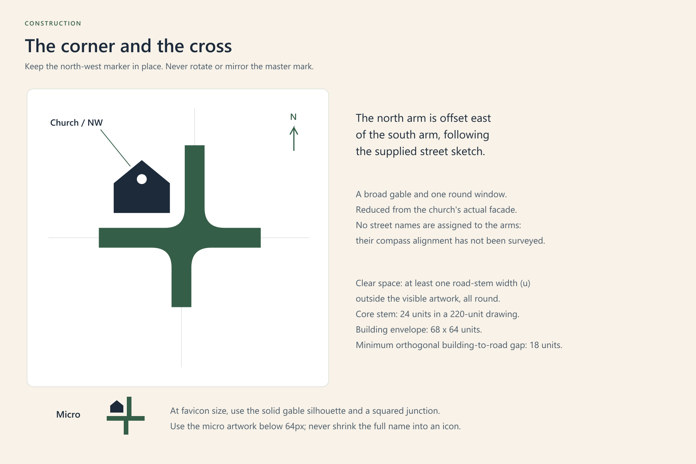
Keep at least one road-stem width of clear space outside the visible logo, all round. The stem is 24 units in a 220-unit master. Suggested minimum widths: detailed symbol 64px / 16mm; horizontal 360px / 85mm; compact 260px / 65mm; stacked 240px / 60mm; fascia 600px / 150mm. These are design recommendations, not proven fabrication limits. Below 64px use the solid micro gable, without the round window; do not include tiny lettering.
Do not rotate, mirror, stretch, tilt, outline, add shadows, alter the roof, or move the church to another quadrant. Use the supplied single-colour version for engraving, embossing, embroidery and cut vinyl. Simplify to the micro gable where the material cannot reproduce the round window. Use white/reversed on dark backgrounds. Avoid primary forest/navy on dark wood, busy stone or photographs.
The fascia has the full name on one line. The entrance panel adds only “Welcome”. Keep phone numbers, service times and notices on a replaceable panel. No mounting holes, fixings, wiring, wind loads, lighting, accessibility certification or heritage permissions are specified here. Measure the location and confirm approvals with a sign professional before production.
Use the symbol alone or the sanctuary signature in one colour. Consider a flat painted finish or a non-reflective relief; the sand preview is a flat colour, not a specified metal. The two separate parts need individual fixings or a carrier panel. Do not add bridges or alter geometry for stencil-cutting without a reviewed production adaptation.
Use outlined SVG or vector PDF for enlargement. PDF page sizes are artwork proportions, not physical dimensions (except letterhead's A4 proportion). They are RGB concept files, not CMYK/PDF-X production files. The printer or sign-maker must set finished size, bleed, substrate, colour profile and paint/material matches, then supply a proof. No pantone match is claimed.
Use the horizontal logo in a roomy website header; use the compact signature when space is tighter, or the symbol with accessible live text on mobile. Use the symbol-only avatar for circular crops and the separate sermon cover for Spotify. Favicon sizes 16, 24, 32, 48, 64, 128 and 256px are included. Email uses the more readable compact signature; contact details stay as live text beside it.
Geometry is a new conceptual interpretation of the user's supplied street sketch (18 October 2026); the church's position is based on the user's north-west quadrant description. No other church's logo was used. The lettering is Segoe UI from the local system, converted to paths for the portable masters. Editable files require a licensed local font. This pack is not a trademark clearance or a declaration of legal exclusivity.